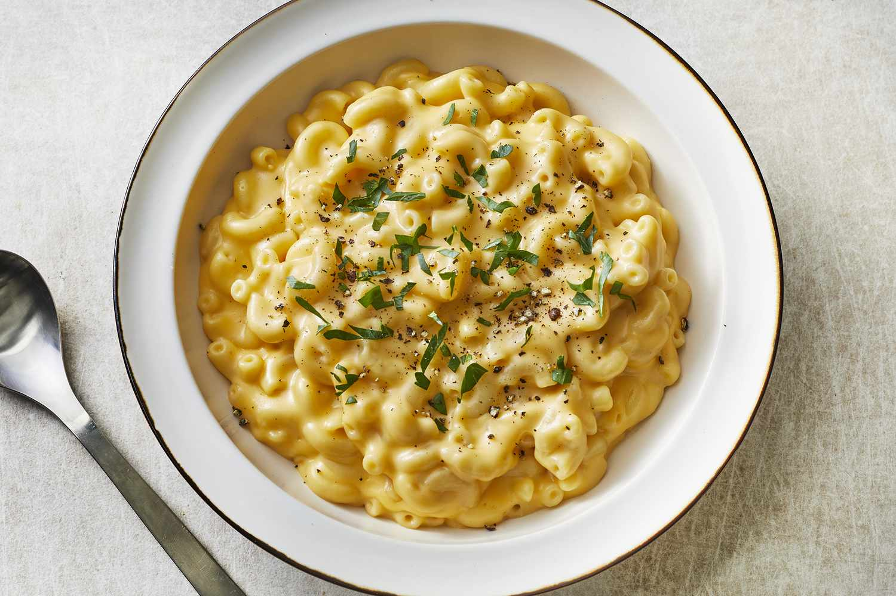

Mac and Cheese

Ingredients
- 700ml full-fat milk
- 1 onion (peeled and halved)
- 1 garlic clove (peeled)
- 1 bay leaf
- 350g macaroni
- 50g butter, plus a little extra for greasing
- 50g plain flour
- 175g mature cheddar cheese (grated)
- 1 tsp English mustard
- 50g parmesan (grated)
- 50g coarse white breadcrumb
Steps
- Prepare the pasta: In a small pan, warm the milk, onion, garlic and bay leaf until almost boiling. Remove from the heat, leave covered to infuse for 10 mins, then strain. Cook the macaroni according to pack instructions until just soft, but still with a little bite (this is called al dente in Italian). This will take about 10 mins. Drain in a colander, then run under the tap and stir to stop the pasta sticking together.
- Make a roux: (A roux is simply flour and fat, cooked together, then used to thicken sauces.) Heat oven to 190C/ fan 170C/gas 5 and butter a 25 x 18cm ovenproof dish. Melt the butter in the medium pan. When foaming, add the flour, then cook, stirring constantly, for 1 min on a low heat.
- Finish the sauce: Slowly stir the warm infused milk into the roux until smooth. Simmer for 3-4 mins, stirring often, until the sauce has thickened and has a coating consistency (run your finger through the sauce on a spoon – it should leave a trail). Remove the pan from the heat, then add the cheddar and mustard powder. Season, then stir until the cheese has melted.
- Assemble and bake: Mix the cheesesauce through the macaroni to coat it well, then tip into the prepared dish. Sprinkle the Parmesan and breadcrumbs over the top, then bake for 15-20 mins until golden brown and bubbling. Serve piping hot on its own or with a green salad.
- EQUIPMENT: 1 small saucepan with lid, 1 large saucepan, 1 medium saucepan, colander, chopping board, sharp knife, grater, wooden spoon, ovenproof dish